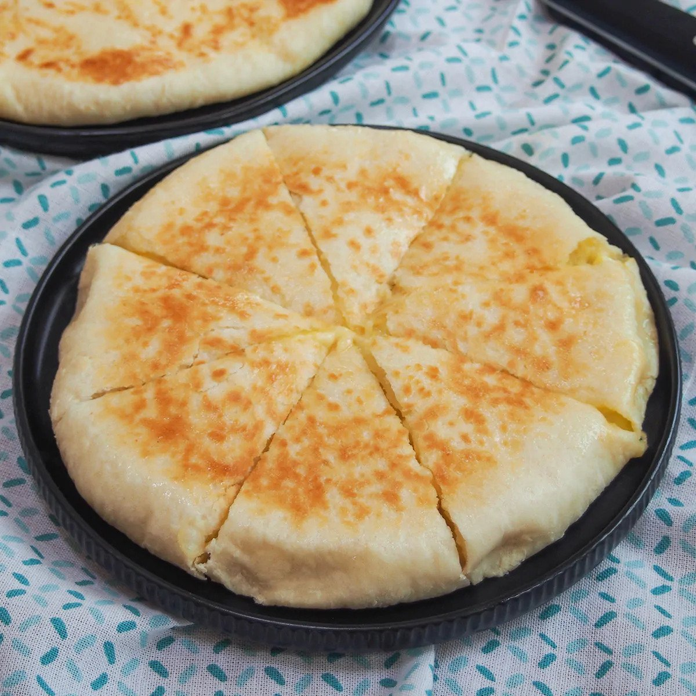

Khachapuri recipe

Khachapuri is a traditional Georgian dish of cheese-filled bread. The bread is leavened and allowed to rise, molded into various shapes, and then filled in the center with a mixture of cheese, eggs, and other ingredients. The bread crust is traditionally torn off and dipped into the cheese.
Ingredients:
- All purpose flour
- Salt
- Yeast
- Georgian cheese
- BUtter
Recipe instructions
- Make the dough
- put in the filling
- bake for 20 minutes or cook on the pan
and again you are done and you can now enjoy this beautiful cheesy goodness
Main page